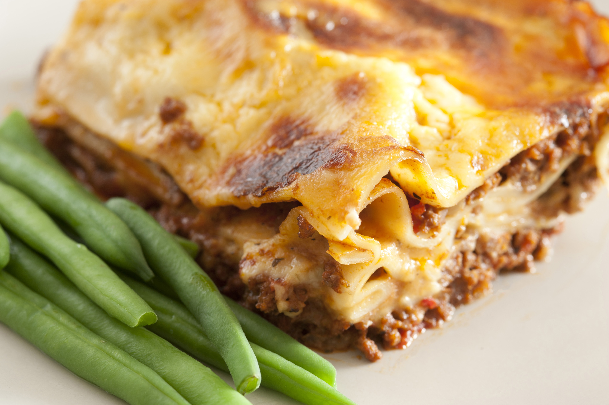

Lasagna Recipe

Description
This is a wonderfully simple dish that can be prepared within an hour.
It can be frozen in individual batches and cooked from frozen.
Ingredients
(serves 4)
- Pasta sheets x4
- Beef mince 500g
- onion large x1
- garlic bulbs x3
- cheddar cheese, grated 150g
- parmesan cheese, grated 100g
- flour 100g
- milk 200ml
- flour 60g
- oregano 1 teaspoon
- rosemary 1 sprig
Steps
- Preheat the oven to 200C.
- Make a cheese sauce from the milk and flour and most of the cheese; keep some cheese aside.
- Fry the onion, garlic and mince.
- Transfer a quarter of the mince to an oven-proof dish.
- Add salt, pepper and a quarter of the herbs.
- Add a pasta sheet and top with a quarter of the cheese sauce.
- Repeat the previous 3 steps until all the ingredients are used up.
- Sprinkle the top of the lasagne with the remainder of the grated cheeses.
- Cook in the oven for 45 minutes.
Recipes Main Page